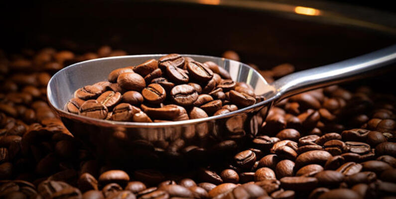

Welcome to the Homepage of Data Grinders
Introduction
"DATA" is a 501(c)(3) non-profit agency that conducts objective, nonpartisan research and delivers insights that decision-makers can trust. Our funding consists of grants, fundraisers, and donations. Over the years, we have experienced funding challenges and have decided to offset our expenses by establishing a for-profit subsidiary called Data Grinders. Our primary objective is to generate consistent income while promoting the mission and values of "DATA."
Overview of the Project and its Purpose
Objectives:
- Revenue Generation - Provide financial support to fund "DATA's" non-profit programs and initiatives.
- Brand Awareness - Leverage the coffee business to raise awareness about our non-profit's mission.
- Community Engagement - Create opportunities for local partnerships and employment.
- Sustainability - Establish a long-term funding source that reduces reliance on donations and grants.
About Us
Data Grinders was decided upon because of a mutual interest in the coffee business. Our team wanted to acquire a deeper understanding of the variables associated with the coffee industry. We sought to gather the following information to make decisions and answer questions that we, our Board of Directors, investors, and others may have about our chosen subsidiary.